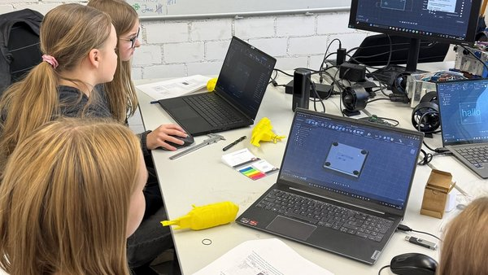

Girls' Day at Campus Göppingen
At the Girls' Day event on Campus Göppingen, U.Stall opened the lab doors to schoolgirls curious about technical careers. Participants tinkered, experimented, and got hands-on with our underwater robotics setup — discovering that engineering is creative, collaborative, and definitely not just for men.
As Software Team Lead, I helped show how software connects cameras, thrusters, and control systems into a working ROV. Events like this are part of U.Stall's corporate responsibility: mentoring students and engaging the community around marine technology.